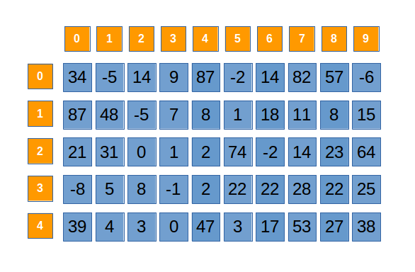
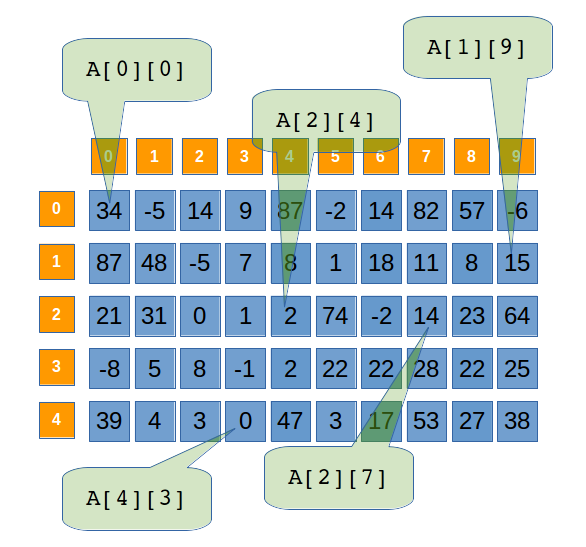

O matrice este o forma de organizare tabelara a unor elemente care au acelsi tip, componentele acesteia putand fi identificate printr-un nume urmat (intre paranteze drepte) de pozitia acestora in cadrul vectorului. Identificarea pozitiei in cadrul matricii se realizeaza prin specificarea liniei si coloanei pe care se afla elementul matricii. Declaratia unei matrici se realizeaza prin specificarea tipului c
Tablourile bidimensionale au două categorii de dimensiuni:
Dimensiuni logice si fizice. dimensiunea fizica este numărul maxim de linii, respectiv coloane pe care le poate avea tabloul; de regula se precizează în enunțul problemei iar dimensiunea logica este umărul de linii linii și de coloane pe care le are matricea la un moment dat, pe parcursul execuției programului. Nu pot să depășească dimensiunile fizice.
Datorită existenței acestor dimensiuni logice, într-un program C/C++ care folosește tablouri bidimensionale, pe lângă variabila care reprezintă tabloul propriu-zis este necesară prezența a încă două variabile, de regulă notate cu n și m, care reprezintă numărul curent de linii, respectiv coloane ale tabloului.
Declararea tablourilor bidimensionale (matrice) face în C/C++ similar cu a tablourilor unidimensionale, dar trebuie precizate două dimensiuni fizice, maximale: numărul maxim de linii și numărul maxim de coloane ale matricei:
tipDeBază denumire[NumarLinii][NumarColoane];
de exemplu:
int A[5][10];

Matricea are:
5 • 10 = 50 de elemente;
5 linii, indexate (numerotate) de la 0 la 4 – mai jos sunt evidențiate liniile cu indici 1 și 3;
10 coloane, indexate de la 0 la 9 – mai jos sunt evidențiate coloanele cu indici 0, 4 și 9;
Referirea elementelor se face prin intermediul operatorului C++ de indexare [] trebuie precizați doi indici – cel de linie și cel de coloană. Astfel, A[2][4] reprezintă elementul matricei aflat pe linia 2 și pe coloana 4 – la intersecția dintre linia 2 și coloana 4. Astfel primul indice al unui element este cel de linie, iar al doilea indice este cel de coloană.
